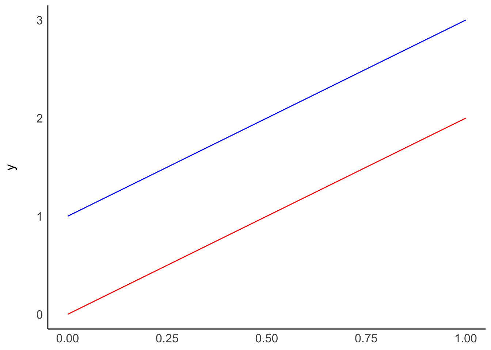
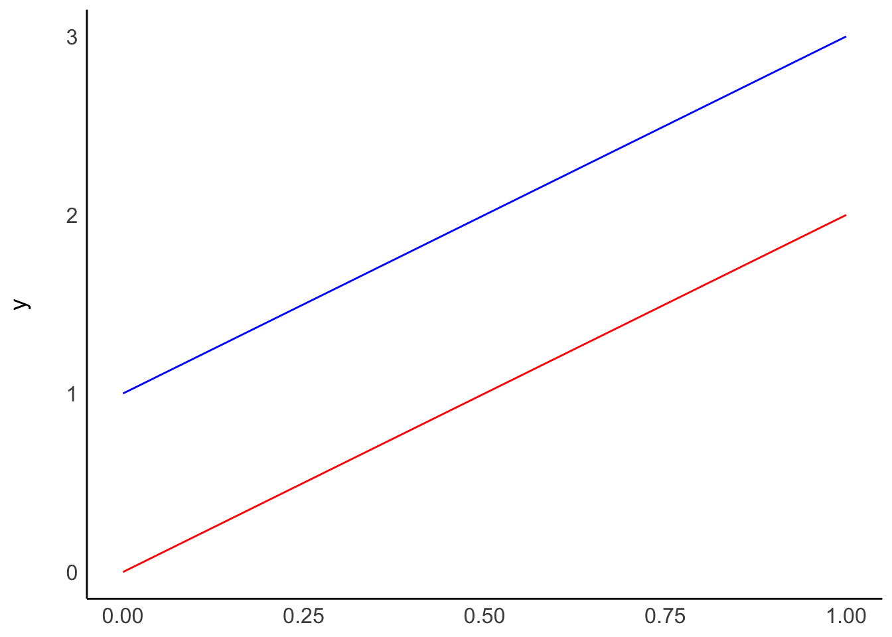

# A: Two models with different beta(0)
ggplot() +
geom_function(fun = function(x) 0 + x * 2, col = "red") +
geom_function(fun = function(x) 1 + x * 2, col = "blue") +
see::theme_modern() 
Regressions are an exciting area of data analysis since it enables us to make very specific predictions, incorporating different variables simultaneously. As the name implies, regressions ‘regress’, i.e., draw on past observations to make predictions about future observations. Thus, any analysis incorporating a regression makes the implicit assumption that the past best explains the future.
I once heard someone refer to regressions as driving a car by looking at the rear-view mirror. As long as the road is straight, we will be able to navigate the car successfully. However, if there is a sudden turn, we might drive into the abyss. This makes it very clear when and how regressions can be helpful. Regressions are also a machine learning method, which falls under models with supervised learning. If you find machine learning fascinating, you might find the book “Hands-on Machine Learning with R” (Boehmke and Greenwell 2019) very insightful and engaging.
In the following chapters, we will cover three common types of regressions, which are also known as Ordinary Least Squares (OLS) regression models:
Single linear regression,
Multiple regression, and
Hierarchical regression, as a special type of multiple regression.
These three types will allow you to perform any OLS regression you could imagine. We can further distinguish two approaches to modelling via regressions:
Hypothesis testing: A regression model is defined ex-ante.
Machine learning: A model is developed based on empirical data.
In the following chapters, we will slightly blur the lines between both approaches by making assumptions about relationships (hypothesising) and make informed decisions based on our data (exploring).
All our regressions will be performed using the covid dataset of the r4np package to investigate whether certain factors can predict COVID numbers in different countries. I felt this book would not have been complete without covering this topic. After all, I wrote this piece during the pandemic, and it likely will mark a darker chapter in human history.
A single linear regression looks very similar to a correlation (see Chapter 10), but it is different in that it defines which variable affects another variable, i.e. a directed relationship. I used the terms dependent variable (DV) and independent variable (IV) previously when comparing groups (see Chapter 11), and we will use them here again. In group comparisons, the independent variable was usually a factor, but in regressions, we can use data that is not a categorical variable, i.e. integer, double, etc.
While I understand that mathematical equations can be confusing, they are fairly simple to understand with regressions. Also, when writing our models in R, we will continuously use a formula to specify our regression. Thus, it is advisable to understand them. For example, a single linear regression consists of one independent variable and one dependent variable:
\[ DV = \beta_{0} + IV * \beta_{1} + error \]
Beta (\(\beta\)) represents the coefficient of the independent variable, i.e. how much a change in IV causes a change in DV. For example, a one-unit change in IV might mean that DV changes by two units of IV:
\[ DV = \beta_0 + IV * 2 + error \]
If we ignore \(\beta_0\) and \(error\) for a moment, we find that that if \(IV = 3\), our \(DV = 3*2 = 6\). Similarly, if \(IV = 5\), we find that \(DV = 10\), and so on. According to this model, DV will always be twice as large as IV.
You might be wondering what \(\beta_0\) stands for. It indicates an offset for each value, also called the intercept. Thus, no matter which value we choose for IV, DV will always be \(\beta_0\) different from IV. It is a constant in our model. This can be best explained by visualising a regression line. Pay particular attention to the expressions after function(x)
# A: Two models with different beta(0)
ggplot() +
geom_function(fun = function(x) 0 + x * 2, col = "red") +
geom_function(fun = function(x) 1 + x * 2, col = "blue") +
see::theme_modern() 
# B: Two models with the same beta(0), but different beta(1)
ggplot() +
geom_function(fun = function(x) 0 + x * 2, col = "red") +
geom_function(fun = function(x) 0 + x * 3, col = "blue") +
see::theme_modern()
Plot A shows two regressions where only \(\beta_0\) differs, i.e. the intercept. On the other hand, plot B shows what happens if we change \(\beta_1\), i.e. the slope. The two models in plot B have the same intercept and, therefore, the same origin. However, the blue line ascends quicker than the red one because its \(\beta_1\) is higher than for the red model.
Lastly, the \(error\) component in the regression model refers to the deviation of data from these regression lines. Ideally, we want this value to be as small as possible.
If everything so far sounds all awfully theoretical, let’s try to fit a regression model by hand. First, we need to consider what our model should be able to predict. Let’s say that the number of COVID-19 cases predicts the number of deaths due to COVID-19. Intuitively we would assume this should be a linear relationship because the more cases there are, the more likely we find more deaths caused by it.
# We only select most recent numbers, i.e. "2021-08-26"
# and countries which have COVID cases
covid_sample <-
covid |>
filter(date_reported == "2021-08-26" &
cumulative_cases != 0)
covid_sample |>
ggplot(aes(x = cumulative_cases,
y = cumulative_deaths)) +
geom_point()
This data visualisation does not show us much. For example, we can see three countries, which appear to have considerably more cases than most other countries. Thus, all other countries are crammed together in the bottom left corner. To improve this visualisation without removing the outliers, we can rescale the x- and y-axis using the function scale_x_continuous() and scale_y_continuous() and apply a "log" transformation.
covid_sample |>
ggplot(aes(x = cumulative_cases,
y = cumulative_deaths)) +
geom_point() +
scale_x_continuous(trans = "log") +
scale_y_continuous(trans = "log")
As a result, the scatterplot is now easier to read, and the dots are more spread out. This reveals that there is quite a strong relationship between cumulative_cases and cumulative_deaths. However, similar to before, we should avoid outliers when performing our analysis. For the sake of simplicity, I will limit the number of countries included in our analysis, which also removes the requirement of using scale_x_continuous() and scale_y_continuous().
covid_sample <-
covid_sample |>
filter(date_reported == "2021-08-26" &
cumulative_cases >= 2500 &
cumulative_cases <= 150000 &
cumulative_deaths <= 3000)
plot <- covid_sample |>
ggplot(aes(x = cumulative_cases,
y = cumulative_deaths)) +
geom_point()
plot
We can try to fit a straight line on top by adjusting the beta values through trial and error. This is effectively what we hope to achieve with a regression: the \(\beta\) values, which best explain our data. Let’s start with the basic assumption of \(y = x\) without specific \(\beta\)s, i.e. they are 0.
plot +
geom_function(fun = function(x) x, col = "red")
What we try to achieve is that the red line fits nicely inside the cloud of dots. Our simple model provides a very poor fit to our data points, because the dots are considerably below it. This makes sense because \(y = x\) would imply that every COVID-19 case leads to a death, i.e. everyone with COVID did not survive. From our own experience, we know that this is luckily not true. Ideally, we want the line to be less steep. We can do this by adding a \(\beta_1\) to our equation. Maybe only 2% of people who got COVID-19 might not have recovered, i.e. \(\beta_1 = 0.02\).
plot +
geom_function(fun = function(x) 0.02 * x, col = "red")
This time the line looks much more aligned with our observations. However, one could argue that it might have to move a little to the right to cover the observations at the bottom better. Therefore, we should add a \(\beta_0\) to our equation, e.g. -50. This moves the line to the right. I also adjusted \(\beta_1\) ever so slightly to make it fit even better.
plot +
geom_function(fun = function(x) -50 + 0.015 * x, col = "red")
We finished creating our regression model. If we wanted to express it as a formula, we would write \(DV = -5 + 0.015 * IV\). We could use this model to predict how high COVID cases will likely be in other countries not included in our dataset.
Estimating a regression model by hand is not ideal and far from accurate. Instead, we would compute the \(\beta\)s based on our observed data, i.e. cumulative_cases and cumulative_deaths. We can use the function lm() to achieve this. I also rounded (round()) all numeric values to two decimal places to make the output easier to read. We also use tidy() to retrieve a cleaner result from the computation.
# We define our model
m0 <- lm(cumulative_deaths ~ cumulative_cases, data = covid_sample)
# We clean the output to make it easer to read
broom::tidy(m0) |>
mutate(across(where(is.numeric),
round, 2)
)Warning: There was 1 warning in `mutate()`.
ℹ In argument: `across(where(is.numeric), round, 2)`.
Caused by warning:
! The `...` argument of `across()` is deprecated as of dplyr 1.1.0.
Supply arguments directly to `.fns` through an anonymous function instead.
# Previously
across(a:b, mean, na.rm = TRUE)
# Now
across(a:b, \(x) mean(x, na.rm = TRUE))# A tibble: 2 × 5
term estimate std.error statistic p.value
<chr> <dbl> <dbl> <dbl> <dbl>
1 (Intercept) 88.1 70.5 1.25 0.21
2 cumulative_cases 0.01 0 10.7 0 We first might notice that the p.value indicates that the relationship between cumulative death and cumulative_cases is significant. Thus, we can conclude that countries with more COVID cases also suffer from higher numbers of people who do not recover successfully from it. However, you might be wondering where our \(\beta\) scores are. They are found where it says estimate. The standard error (std.error) denotes the error we specified in the previous equation. In the first row, we get the \(\beta_0\), i.e. the intercept (88.10). This one is larger than what we estimated, i.e. -50. However, \(\beta_1\) is 0.01, which means we have done a very good job guessing this estimate. Still, it becomes apparent that it is much easier to use the function lm() to estimate a model than ‘eyeballing’ it.
Let me also briefly explain what the function mutate(across(where(is.numeric), round, 2)) does in our computation:
mutate() implies we are changing values of variables,
across() indicates that whatever function is placed insight this function will be applied ‘across’ certain columns. We specified our columns with
where(is.numeric), which indicates that all columns should be selected if they are numeric.
round, 2 represents the function round() and is applied with the paramter 2 to round numbers to two decimal places.
While this is might seem like a more advanced method of handling your data, it is good to get into the habit of writing more efficient code, because it tends to be less prone to errors.
Returning to our data, we can now visualise the computed model (in blue) and our guessed model (in red) in one plot and see the differences. The plot shows that both regression lines are fairly close to each other. Admittedly, it was relatively easy to fit this model by hand. However, it is much more difficult to do so when more than two variables are involved.
plot +
geom_function(fun = function(x) -50 + 0.015 * x, col = "red") +
geom_function(fun = function(x) 88.1 + 0.01 * x, col = "blue")
With our final model computed, we also need to check its quality in terms of predictive power based on how well it can explain our observed data. We tested models before when we looked at confirmatory factor analyses for latent variables (see Section 7.8). This time we want to know how accurate our model is in explaining observed data and, therefore, how accurate it predicts future observations. The package performance offers a nice shortcut to compute many different indicators at once:
check_model(): Checks for linearity, homogeneity, collinearity and outliers
model_performance(): Tests the quality of our model.
For now, we are mainly interested in the performance of our model. So, we can compute it the following way:
performance::model_performance(m0)# Indices of model performance
AIC | AICc | BIC | R2 | R2 (adj.) | RMSE | Sigma
----------------------------------------------------------------------
1472.626 | 1472.887 | 1480.319 | 0.548 | 0.543 | 502.573 | 507.891We are presented with quite a number of performance indicators, and here is how to read them:
AIC stands for Akaike Information Criterion, and the lower the score, the better the model.
BIC stands for Bayesian Information Criterion, and the lower the score, the better the model.
R2 stands for R squared (\(R^2\)) and is also known as the coefficient of determination. It measures how much the independent variable can explain the variance in the dependent variable. In other words, the higher \(R^2\), the better is our model, because our model can explain more of the variance. \(R^2\) falls between 0-1, where 1 would imply that our model can explain 100% of the variance in our sample. \(R^2\) is also considered a goodness-of-fit measure.
R2 (adj.) stands for adjusted R squared. The adjusted version of \(R^2\) becomes essential if we have more than one predictor (i.e. multiple independent variables) in our regression. The adjustment of \(R^2\) accounts for the number of independent variables in our model. Thus, we can compare different models, even though they might have different numbers of predictors. It is important to note that unadjusted \(R^2\) will always increase if we add more predictors.
RMSE stands for Root Mean Square Error and indicates how small or large the prediction error of the model is. Conceptually, it aims to measure the average deviations of values from our model when we attempt predictions. The lower its score, the better, i.e. a score of 0 would imply that our model perfectly fits the data, which is likely never the case in the field of Social Sciences. The RMSE is particularly useful when trying to compare models.
Sigma stands for the standard deviation of our residuals (the difference between predicted and empirically observed values) and is a measure of prediction accuracy. Sigma is ‘a measure of the average distance each observation falls from its prediction from the model’ (Gelman, Hill, and Vehtari 2020) (p. 168).
Many of these indices will become more relevant when we compare models. However, \(R^2\) can also be meaningfully interpreted without a reference model. We know that the bigger \(R^2\), the better. In our case, it is 0.548, which is very good considering that our model consists of only one predictor. It is not easy to interpret whether a particular \(R^2\) value is good or bad. In our simple single linear regression, \(R^2\) is literally ‘r squared’, which we already know from correlations and their effect sizes (see Table 10.2). Thus, if we take the square root of \(R^2\) we can retrieve the correlation coefficient, i.e. \(r = \sqrt{R^2} = \sqrt{0.548} = 0.740\). According to J. Cohen (1988), this would count as a large effect size.
However, the situation is slightly more complicated for multiple regressions, and we cannot use Cohen’s reference table by taking the square root of \(R^2\). Still, the meaning of \(R^2\) and its adjusted version remain the same for our model.
Once you have a model and it is reasonably accurate, you can start making predictions. This can be achieved by using our model object m0 with the function add_predictions() from the modelr package. However, first, we should define a set of values for our independent variable, i.e. cumulative_cases, which we store in a tibble using the tibble() function.
df_predict <-
tibble(cumulative_cases = c(100, 1000, 10000))
# Make our predictions
df_predict |>
modelr::add_predictions(m0) |>
mutate(pred = round(pred, 0))# A tibble: 3 × 2
cumulative_cases pred
<dbl> <dbl>
1 100 90
2 1000 102
3 10000 232The predictions are stored in column pred. Therefore, we know how many deaths from COVID have to be expected based on our model for each value in our dataset.
Single linear regressions are simple and an excellent way to introduce novice users of R to modelling social phenomena. However, we hardly ever find that a single variable can explain enough variance to be a helpful model. Instead, we can most likely improve most of our single regression models by considering more variables and using a multiple regression technique.
Multiple regressions expand single linear regressions by allowing us to add more variables. Maybe less surprising, computing a multiple regression is similar to a single regression in R because it requires the same function, i.e. lm(). However, we add more IVs. Therefore, the equation we used before needs to be modified slightly by adding more independent variables. Each of these variables will have its own \(\beta\) value:
\[ DV = \beta_{0} + IV_{1} * \beta_{1} + IV_{2} * \beta_{2} + ... + IV_{n} * \beta_{n} + error \]
In the last section, we wanted to know how many people will likely not recover from COVID. However, it might be even more interesting to understand how we can predict new cases and prevent casualties from the outset. Since I live in the United Kingdom during the pandemic, I am curious whether specific COVID measures help reduce the number of new cases in this country. To keep it more interesting, I will also add Germany to the mix since it has shown to be very effective in handling the pandemic relative to other European countries. Of course, feel free to pick different countries (maybe the one you live in?) to follow along with my example. In Section 13.3.2 it will become apparent why I chose two countries (#spoiler-alert).
First, we create a dataset that only contains information from the United Kingdom and Germany1, using filter().
covid_uk_ger <-
covid |>
filter(iso3 == "GBR" | iso3 == "DEU")In the next step, we might want to know how new cases are distributed over time. It is always good to inspect the dependent variable to get a feeling of how much variance there is in our data. Having a more extensive range of data values is ideal because the regression model will consider low and high values of the dependent variable instead of just high or low scores. If you find that your dependent variable shows minimal variance, your model will likely be ‘overfitted’. An overfitted model can very well explain the sample data but performs poorly with a new dataset. This is, of course not desirable, because the value of creating a model is to predict future observations. Let’s plot the DV new_cases across time to see when and how many new COVID cases had to be reported for both countries together.
covid_uk_ger |>
ggplot(aes(x = date_reported,
y = new_cases)) +
geom_col()
We can tell that there are different waves of new cases with very low and very high values. As such, we should find variables that help us explain when new_cases are high and when they are low. If you have hypotheses to test, you would already know which variables to include in your regression. However, we do not have a hypothesis based on our prior reading or other studies. Thus, we pick variables of interest that we suspect could help us with modelling new COVID cases. For example, we can be fairly confident that the number of new COVID cases should be lower if more safety measures are in place - assuming that they are effective and everyone adheres to them. The covid dataset includes such information evaluated by the WHO, i.e. masks, travel, gatherings, schools and movements. Remember, you can always find out what these variables stand for by typing ?covid into the console. A higher value for these variables indicates that there were more safety measures in place. Scores can range from 0 (i.e. no measures are in place) to 100 (i.e. all WHO measures are in place).
We can add multiple variables by using the + symbol in the lm() function.
# Create our model
m0 <- lm(new_cases ~ masks + movements + gatherings +
schools + businesses + travel,
data = covid_uk_ger)
# Inspect the model specifications.
# I always round the p.value since I
# do not prefer the scientific notation
broom::tidy(m0) |>
mutate(p.value = round(p.value, 3))# A tibble: 7 × 5
term estimate std.error statistic p.value
<chr> <dbl> <dbl> <dbl> <dbl>
1 (Intercept) -2585. 745. -3.47 0.001
2 masks -14.8 9.18 -1.61 0.108
3 movements -54.7 15.5 -3.52 0
4 gatherings -26.0 19.8 -1.31 0.191
5 schools 394. 29.7 13.2 0
6 businesses 93.7 13.8 6.79 0
7 travel 49.5 9.30 5.32 0 # Evaluate the quality of our model
performance::model_performance(m0)# Indices of model performance
AIC | AICc | BIC | R2 | R2 (adj.) | RMSE | Sigma
-----------------------------------------------------------------------------
25277.622 | 25277.744 | 25318.262 | 0.233 | 0.229 | 10027.204 | 10056.877Overall (and purely subjectively judged), the model is not particularly great because even though we added so many variables, the \(adjusted \ R^2\) is not particularly high, i.e. ‘only’ 0.229. As mentioned earlier, for multiple regression, it is better to look at \(adjusted \ R^2\), because it adjusts for the number of variables in our model and makes the comparison of different models easier. There are a couple more important insights gained from this analysis:
Not all variables appear to be significant. The predictors masks and gatherings are not significant, i.e. p.value > 0.05. Thus, it might be worth removing these variables to optimise the model.
The variable, movements seems to reduce new_cases, i.e. it has a negative estimate (\(\beta\)).
However, schools, businesses, and travel have a positive effect on new_cases.
Especially the last point might appear confusing. How can it be that if more measures are taken, the number of new COVID cases increases? Should we avoid them? We have not considered in our regression that measures might be put in place to reduce the number of new cases rather than to prevent them. Thus, it might not be the case that schools, businesses, and travel predict higher new_cases, but rather the opposite, i.e. due to higher new_cases, the measures for schools, businesses and travel were tightened, which later on (with a time lag) led to lower new_cases. Thus, the relationships might be a bit more complicated, but to keep things simple, we accept that with our data, we face certain limitations (as is usually the case)2.
As a final step, we should remove the variables that are not significant and see how this affects our model.
m1 <- lm(new_cases ~ movements + schools + businesses + travel,
data = covid_uk_ger)
broom::tidy(m1) |>
mutate(p.value = round(p.value, 3))# A tibble: 5 × 5
term estimate std.error statistic p.value
<chr> <dbl> <dbl> <dbl> <dbl>
1 (Intercept) -3024. 724. -4.18 0
2 movements -64.0 13.4 -4.79 0
3 schools 382. 28.8 13.3 0
4 businesses 90.5 12.9 7.01 0
5 travel 45.7 9.17 4.99 0# Evaluate the quality of our model
performance::model_performance(m1)# Indices of model performance
AIC | AICc | BIC | R2 | R2 (adj.) | RMSE | Sigma
-----------------------------------------------------------------------------
25279.519 | 25279.590 | 25309.999 | 0.229 | 0.227 | 10052.123 | 10073.343Comparing our original model m0 with our revised model m1, we can see that our R2 (adj.) barely changed. Thus, m1 is a superior model because it can explain (almost) the same amount of variance but with fewer predictors. The model m1 would also be called a parsimonious model, i.e. a model that is simple but has good predictive power. When reading about multiple regressions, you might often hear people mention the ‘complexity’ of a model, which refers to the number of predictors. The complexity of a model is known as the ‘degrees of freedom (df) of the numerator’ and is computed as \(number\ of\ preditors - 1\). For example, in our model of 4 independent variables, the df of the numerator is 3. This value is relevant when computing the power of a regression model (see also Chapter 12).
performance::compare_performance(m0, m1)# Comparison of Model Performance Indices
Name | Model | AIC (weights) | AICc (weights) | BIC (weights) | R2 | R2 (adj.) | RMSE | Sigma
--------------------------------------------------------------------------------------------------------------
m0 | lm | 25277.6 (0.721) | 25277.7 (0.716) | 25318.3 (0.016) | 0.233 | 0.229 | 10027.204 | 10056.877
m1 | lm | 25279.5 (0.279) | 25279.6 (0.284) | 25310.0 (0.984) | 0.229 | 0.227 | 10052.123 | 10073.343However, there are a couple of things we overlooked when running this regression. If you are familiar with regressions already, you might have been folding your hands over your face and burst into tears about the blasphemous approach to linear regression modelling. Let me course-correct at this point.
Similar to other parametric approaches, we need to test for sources of bias, linearity, normality and homogeneity of variance. Since multiple regressions consider more than one variable, we must consider these criteria in light of other variables. As such, we have to draw on different tools to assess our data. There are certain pre- and post-tests we have to perform to evaluate and develop a multiple regression model fully:
Pre-test: We need to consider whether there are any outliers and whether all assumptions of OLS regression models are met.
Post-test: We need to check whether our independent variables correlate very strongly with each other, i.e. are there issues of multiple collinearity.
We already covered aspects of linearity, normality and homogeneity of variance. However, outliers and collinearity have to be reconsidered for multiple regressions.
While it should be fairly clear by now why we need to handle outliers (remember Section 9.6), our approach is somewhat different when we need to consider multiple variables at once. Instead of identifying outliers for each variable independently, we have to consider the interplay of variables. In other words, we need to find out how an outlier in our independent variable affects the overall model rather than just one other variable. Thus, we need a different technique to assess outliers. By now, you might not be shocked to find that there is more than one way of identifying outliers in regressions and that there are many different ways to compute them in R. (P. Cohen, West, and Aiken 2014) distinguishes between where one can find outliers in the model as summarised in Table 13.1). I offer a selection of possible ways to compute the relevant statistics, but this list is not exhaustive. For example, many of these statistics can also be found using the function influence.measures().
| Outlier in? | Measures | function in R |
|---|---|---|
| Dependent variable |
|
|
| Dependent variable |
|
|
| Independent variable |
|
|
| Independent variable |
|
|
| Entire model | Global measures of influence
|
Global measures of influence
|
| Entire model | Specific measures of influence:
|
Specific measures of influence:
|
While it might be clear why we need to use different approaches to find outliers in different model components, this might be less clear when evaluating outliers that affect the entire model. We distinguish between global measures of influence, which identify how a single observation affects the quality of the entire model, and specific measures of influence, which determine how a single observation affects each independent variable, i.e. its regression coefficients denoted as \(\beta\). It is recommended to look at all different outlier measures before venturing ahead to perform linear multiple regression. Going through the entire set of possible outliers would go way beyond the scope of this book. So, I will focus on five popular measures which cover all three categories:
Dependent variable: Externally studentised residuals
Independent variable: Leverage and Mahalanobis distance
Entire model: Cook’s d and DFBETAS
The approach taken is the same for the other outlier detection methods, but with different functions. Thus, it should be quite simple to reproduce these as well after having finished the chapters below.
Irrespective of whether we look at independent or dependent variables, we always want to know whether extreme values are present. Here I will use the externally studentised residual, which ’is the preferred statistic to use to identify cases whose (…) values are highly discrepant from their predicted values (P. Cohen, West, and Aiken 2014) (p.401).
First, we need to compute the residuals for our model as a new column in our dataset. Since we also want to use other methods to investigate outliers, we can use the function fortify(), which will add some of the later indicators and creates a tibble that only includes the variables from our model. This one handy function does a lot of things at once. In a second step, we add the studentised residuals using rstudent().
# Create a tibble with some pre-computed stats
m1_outliers <-
fortify(m1) |>
as_tibble()
glimpse(m1_outliers)Rows: 1,188
Columns: 11
$ new_cases <dbl> 0, 0, 0, 0, 0, 0, 0, 0, 0, 0, 0, 0, 0, 0, 0, 0, 0, 0, 0, 0,…
$ movements <dbl> 0, 0, 0, 0, 0, 0, 0, 0, 0, 0, 0, 0, 0, 0, 0, 0, 0, 0, 0, 0,…
$ schools <dbl> 0, 0, 0, 0, 0, 0, 0, 0, 0, 0, 0, 0, 0, 0, 0, 0, 0, 0, 0, 0,…
$ businesses <dbl> 0, 0, 0, 0, 0, 0, 0, 0, 0, 0, 0, 0, 0, 0, 0, 0, 0, 0, 0, 0,…
$ travel <dbl> 0, 0, 0, 0, 0, 0, 0, 0, 0, 0, 0, 0, 0, 0, 0, 0, 0, 0, 0, 0,…
$ .hat <dbl> 0.005159386, 0.005159386, 0.005159386, 0.005159386, 0.00515…
$ .sigma <dbl> 10077.22, 10077.22, 10077.22, 10077.22, 10077.22, 10077.22,…
$ .cooksd <dbl> 9.393496e-05, 9.393496e-05, 9.393496e-05, 9.393496e-05, 9.3…
$ .fitted <dbl> -3023.617, -3023.617, -3023.617, -3023.617, -3023.617, -302…
$ .resid <dbl> 3023.617, 3023.617, 3023.617, 3023.617, 3023.617, 3023.617,…
$ .stdresid <dbl> 0.3009375, 0.3009375, 0.3009375, 0.3009375, 0.3009375, 0.30…# Add the externally studentised residuals
m1_outliers <-
m1_outliers |>
mutate(.studresid = rstudent(m1))
glimpse(m1_outliers)Rows: 1,188
Columns: 12
$ new_cases <dbl> 0, 0, 0, 0, 0, 0, 0, 0, 0, 0, 0, 0, 0, 0, 0, 0, 0, 0, 0, 0,…
$ movements <dbl> 0, 0, 0, 0, 0, 0, 0, 0, 0, 0, 0, 0, 0, 0, 0, 0, 0, 0, 0, 0,…
$ schools <dbl> 0, 0, 0, 0, 0, 0, 0, 0, 0, 0, 0, 0, 0, 0, 0, 0, 0, 0, 0, 0,…
$ businesses <dbl> 0, 0, 0, 0, 0, 0, 0, 0, 0, 0, 0, 0, 0, 0, 0, 0, 0, 0, 0, 0,…
$ travel <dbl> 0, 0, 0, 0, 0, 0, 0, 0, 0, 0, 0, 0, 0, 0, 0, 0, 0, 0, 0, 0,…
$ .hat <dbl> 0.005159386, 0.005159386, 0.005159386, 0.005159386, 0.00515…
$ .sigma <dbl> 10077.22, 10077.22, 10077.22, 10077.22, 10077.22, 10077.22,…
$ .cooksd <dbl> 9.393496e-05, 9.393496e-05, 9.393496e-05, 9.393496e-05, 9.3…
$ .fitted <dbl> -3023.617, -3023.617, -3023.617, -3023.617, -3023.617, -302…
$ .resid <dbl> 3023.617, 3023.617, 3023.617, 3023.617, 3023.617, 3023.617,…
$ .stdresid <dbl> 0.3009375, 0.3009375, 0.3009375, 0.3009375, 0.3009375, 0.30…
$ .studresid <dbl> 0.3008218, 0.3008218, 0.3008218, 0.3008218, 0.3008218, 0.30…With our dataset ready for plotting, we can do exactly that and see which observations are particularly far away from the rest of our .studresid values. To plot each observation separately, we need an id variable for each row. We can quickly add one by using the function rownames_to_column(). This way, we can identify each column and also filter() out particular rows. You might be able to guess why this will come in handy at a later stage of our outlier analysis (hint: Section 13.2.1.5).
# Create an ID column
m1_outliers <- m1_outliers |> rownames_to_column()
m1_outliers |>
ggplot(aes(x = rowname,
y = .studresid)) +
geom_point(size = 0.5)
The values of the externally studentised residuals can be positive or negative. All we need to know is which values count as outliers and which ones do not. P. Cohen, West, and Aiken (2014) (p. 401) provides some guidance:
general: \(outlier = \pm 2\)
bigger samples: \(outlier = \pm 3\) or \(\pm 3.5\) or \(\pm 4\)
As you can tell, it is a matter of well-informed personal judgement. Our dataset consists of over 1200 observations. As such, the data frame certainly counts as large. We can take a look and see how many outliers we would get for each of the benchmarks.
out_detect <-
m1_outliers |>
mutate(pm_2 = ifelse(abs(.studresid) > 2, "TRUE", "FALSE"),
pm_3 = ifelse(abs(.studresid) > 3, "TRUE", "FALSE"),
pm_35 = ifelse(abs(.studresid) > 3.5, "TRUE", "FALSE"),
pm_4 = ifelse(abs(.studresid) > 4, "TRUE", "FALSE"))
out_detect |> count(pm_2)# A tibble: 2 × 2
pm_2 n
<chr> <int>
1 FALSE 1132
2 TRUE 56out_detect |> count(pm_3)# A tibble: 2 × 2
pm_3 n
<chr> <int>
1 FALSE 1171
2 TRUE 17out_detect |> count(pm_35)# A tibble: 2 × 2
pm_35 n
<chr> <int>
1 FALSE 1173
2 TRUE 15out_detect |> count(pm_4)# A tibble: 2 × 2
pm_4 n
<chr> <int>
1 FALSE 1179
2 TRUE 9The results indicate we could have as many as 56 outliers and as little as 9. It becomes apparent that choosing the right threshold is a tricky undertaking. Let’s plot the data again to make it easier to read and add some of the thresholds. I skip 3.5 since it is very close to 3. I also reorder the observations (i.e. the x-axis) based on .studresid using reorder().
m1_outliers |>
ggplot(aes(x = reorder(rowname, .studresid),
y = .studresid)) +
geom_point(size = 0.5) +
geom_hline(yintercept = c(-2, 2), col = "green") +
geom_hline(yintercept = c(-3, 3), col = "orange") +
geom_hline(yintercept = c(-4, 4), col = "red")
At this point, it is a matter of choosing the threshold that you feel is most appropriate. More importantly, though, you have to make sure you are transparent in your choices and provide some explanations around your decision-making. For example, a threshold of 2 appears too harsh for my taste and identifies too many observations as outliers. On the other hand, using the orange threshold of 3 seems to capture most observations I would consider an outlier because we can also visually see how the dots start to look less like a straight line and separate more strongly. Besides, P. Cohen, West, and Aiken (2014) also suggests that a threshold of 3 is more suitable for larger datasets. Finally, since we have an ID column (i.e. rownames), we can also store our outliers in a separate object to easily reference them later for comparisons with other measures. Again, the purpose of doing this will become evident in Section 13.2.1.5.
outliers <-
out_detect |>
select(rowname, pm_3) |>
rename(studresid = pm_3)There are still more diagnostic steps we have to take before deciding which observations we want to remove or deal with in other ways (see also Section 9.6).
To identify outliers in independent variables, we can use Leverage scores or the Mahalanobis distances. Both are legitimate approaches and can be computed very easily.
For the leverage scores, we can find them already in our fortify()-ed dataset m1_outliers. They are in the column .hat. An outlier is defined by the distance from the average leverage value, i.e. the further the distance of an observation from this average leverage, the more likely we have to classify it as an outlier. The average leverage is computed as follows:
\(average\ leverage = \frac{k + 1}{n}\)
In this equation, k stands for the number of predictors (i.e. 6) and n for the number of observations (i.e. 1188). Therefore, our average leverage can be computed as follows:
(avg_lvg <- (6 + 1) / 1188)[1] 0.005892256Similar to before, we find different approaches to setting cut-off points for this indicator. While Hoaglin and Welsch (1978) argue that a distance twice the average counts as an outlier, Stevens (2012) (p. 105) suggests that values three times higher than the average leverage will negatively affect the model. The rationale is the same as for the externally studentised residuals: If the thresholds are too low, we might find ourselves with many observations, which we would have to investigate further. This might not always be possible or even desirable. However, this should not imply that many outliers are not worth checking. Instead, if there are many, one would have to raise questions about the model itself and whether an important variable needs adding to explain a series of observations that appear to be somewhat ‘off’.
Let’s plot the leverages and use Stevens (2012) benchmark to draw our reference line.
m1_outliers |>
ggplot(aes(x = reorder(rowname, .hat),
y = .hat)) +
geom_point(size = 0.5) +
geom_hline(yintercept = 3 * avg_lvg, col = "orange")
As before, we want to know which observations fall beyond the threshold.
new_outliers <-
m1_outliers |>
mutate(avglvg = ifelse(.hat > 3 * avg_lvg, "TRUE", "FALSE")) |>
select(rowname, avglvg)
# Add new results to our reference list
outliers <- left_join(outliers, new_outliers, by = "rowname")Looking at our reference object outliers, you will notice that both methods (studresid and avglvg) detect different outliers. Thus, the detection of outliers depends on where we look, i.e. dependent variable or independent variable.
The second method I will cover in this section is the Mahalanobis distance. Luckily the rstatix package includes a handy function mahalanobis_distance() which automatically detects outliers and classifies them for us.
mhnbs_outliers <-
m1_outliers |>
select(new_cases:travel) |>
rstatix::mahalanobis_distance() |>
rownames_to_column() |>
select(rowname, mahal.dist, is.outlier) |>
rename(mhnbs = is.outlier)
# Add new results to our reference list
outliers <- left_join(outliers, mhnbs_outliers, by = "rowname")
glimpse(outliers)Rows: 1,188
Columns: 5
$ rowname <chr> "1", "2", "3", "4", "5", "6", "7", "8", "9", "10", "11", "1…
$ studresid <chr> "FALSE", "FALSE", "FALSE", "FALSE", "FALSE", "FALSE", "FALS…
$ avglvg <chr> "FALSE", "FALSE", "FALSE", "FALSE", "FALSE", "FALSE", "FALS…
$ mahal.dist <dbl> 5.215, 5.215, 5.215, 5.215, 5.215, 5.215, 5.215, 5.215, 5.2…
$ mhnbs <lgl> FALSE, FALSE, FALSE, FALSE, FALSE, FALSE, FALSE, FALSE, FAL…# We need to remove mahal.dist because it does not indicate
# whether a value is an outlier #data-cleaning
outliers <- outliers |> select(-mahal.dist)While it is very convenient that this function picks the cut-off point for us, it might be something we would want more control over. As we have learned so far, choosing the ‘right’ cut-off point is essential. Since the values follow a chi-square distribution, we can determine the cut-off points based on the relevant critical value at the chosen p-value. R has a function that allows finding the critical value for our model, i.e. qchisq().
(mhnbs_th <- qchisq(p = 0.05,
df = 4,
lower.tail = FALSE))[1] 9.487729The p-value reflects the probability we are willing to accept that our result is significant/not significant (remember Type I error in Chapter 12). The value df refers to the degrees of freedom, which relates to the number of independent variables, i.e. 4. Thus, it is fairly simple to identify a cut-off point yourself by choosing the p-value you consider most appropriate. The function mahalanobis_distance() assumes \(p = 0.01\), which is certainly a good but strict choice.
If we want to plot outliers as before, we can reuse our code from above and replace it with the relevant new variables.
mhnbs_outliers |>
ggplot(aes(x = reorder(rowname, mahal.dist),
y = mahal.dist)) +
geom_point(size = 0.5) +
geom_hline(yintercept = mhnbs_th, col = "orange")
Looking at our outliers, we notice that the Mahalanobis distance identifies more outliers than the leverage, but the same ones.
outliers |> filter(avglvg == "TRUE")# A tibble: 18 × 4
rowname studresid avglvg mhnbs
<chr> <chr> <chr> <lgl>
1 224 FALSE TRUE TRUE
2 225 FALSE TRUE TRUE
3 226 FALSE TRUE TRUE
4 227 FALSE TRUE TRUE
5 969 FALSE TRUE TRUE
6 970 FALSE TRUE TRUE
7 971 FALSE TRUE TRUE
8 972 FALSE TRUE TRUE
9 973 FALSE TRUE TRUE
10 974 FALSE TRUE TRUE
11 975 FALSE TRUE TRUE
12 976 FALSE TRUE TRUE
13 977 FALSE TRUE TRUE
14 978 FALSE TRUE TRUE
15 979 FALSE TRUE TRUE
16 980 FALSE TRUE TRUE
17 981 FALSE TRUE TRUE
18 982 FALSE TRUE TRUE Thus, whether you need to use both approaches for the same study is questionable and likely redundant. Still, in a few edge cases, you might want to double-check the results, especially when you feel uncertain which observations should be dealt with later. But, of course, it does not take much time to consider both options.
Besides looking at each side of the regression separately, we might also consider whether removing an observation significantly affects all variables. This is done with outlier detection diagnostics which consider the entire model.
To assess the global impact of outliers on the entire regression model, Cook’s d (Cook and Weisberg 1982) is a popular method in the Social Sciences. It measures to which extend a single observation can affect the predictive power of our model to explain all other observations. Obviously, we do not wish to keep observations that make predicting most of the other observations more challenging. However, as shown in Table 13.1, there are different approaches to this, but some are somewhat redundant. For example, P. Cohen, West, and Aiken (2014) highlight that DDFITS and Cook’s d are ‘interchangeable statistics’ (p. 404). Thus, there is no point in demonstrating both since they function similarly. Your decision might be swayed by the preferences of a publisher, editor, lecturer, supervisor or reviewer. Here, I will focus on Cook’s d since it is the approach I see most frequently used in my field. By all means, feel encouraged to go the extra mile and perform the same steps for the DDFITS.
The good news, fortify() automatically added .cooksd to our dataset m1_outliers. Thus, we can immediately compute whether outliers exist and inspect them visually as we did before. A promising starting point to find outliers via the Cook’s D is to plot its distribution.
m1_outliers |>
ggplot(aes(x = rowname,
y = .cooksd)) +
geom_col()
Inspecting this barplot, we can tell that some observations have much higher .cooksd values than any other observation. Once again, we first need to decide on a benchmark to determine whether we can consider these values as outliers. If we follow Cook and Weisberg (1982), values that are higher than 1 (i.e. \(d > 1\)) require reviewing. Looking at our plot, none of the observations reaches 1, and we need not investigate outliers. Alternatively, P. Cohen, West, and Aiken (2014) suggest that other benchmarks are also worth considering, for example, based on the critical value of an F distribution, which we can determine with the function qf(). This requires us to determine two degrees of freedom (\(df_1\) and \(df_2\)) and a p-value. To determine these values, P. Cohen, West, and Aiken (2014) suggests \(p = 0.5\) and the following formulas to determine the correct \(df\):
\(df_1 = k +1\)
\(df_2 = n - k - 1\)
Like the critical value for average leverage, \(k\) reflects the number of predictors, and \(n\) refers to the sample size. Thus, we can determine the critical value, and therefore our cut-off point as follows:
qf(p = 0.5,
df1 = 4 + 1,
df2 = 1188 - 6 - 1)[1] 0.8707902This score would also imply that we have no particular outliers to consider, because the highest value in .cooksd is 0.09 computed via max(m1_outliers$.cooksd).
We might be led to believe that our work is done here, but P. Cohen, West, and Aiken (2014) recommends that any larger deviation is worth inspecting. We do notice that relative to other observations, some cases appear extreme. Ideally, one would further investigate these cases and compare the regression results by removing such extreme cases iteratively. This way, one can assess whether the extreme observations genuinely affect the overall estimates of our model. This would imply repeating steps we already covered earlier when performing multiple regressions with and without outliers. Thus, I will forgo this step here.
In the last chapter about outliers (Section 13.2.1.5), we will rerun the regression without outliers to see how this affects our model estimates. However, before we can do this, we have to cover one more method of detecting outliers.
While Cook’s d helps us identify outliers that affect the quality of the entire model, there is also a way to investigate how outliers affect specific predictors. This is achieved with DFBETAS, which, similar to previous methods, assesses the impact of outliers by removing them and measures the impact of such removal on other parts of the regression model.
The function dbetas() takes our model m1 and returns the statistics for each predictor in the model. Thus, we do not receive a single score for each observation but multiple for each specific predictor, i.e. each specific measure.
m1_dfbetas <-
dfbetas(m1) |>
as_tibble() |> # convert to tibble for convenience
rownames_to_column() # add our rownames
glimpse(m1_dfbetas)Rows: 1,188
Columns: 6
$ rowname <chr> "1", "2", "3", "4", "5", "6", "7", "8", "9", "10", "11",…
$ `(Intercept)` <dbl> 0.02166365, 0.02166365, 0.02166365, 0.02166365, 0.021663…
$ movements <dbl> -0.0008908373, -0.0008908373, -0.0008908373, -0.00089083…
$ schools <dbl> -0.01412839, -0.01412839, -0.01412839, -0.01412839, -0.0…
$ businesses <dbl> -0.002957931, -0.002957931, -0.002957931, -0.002957931, …
$ travel <dbl> -0.005546516, -0.005546516, -0.005546516, -0.005546516, …All we have to do now is to compare the scores against a benchmark for each variable in this dataset, and we know which observations substantially affect one of the predictors. P. Cohen, West, and Aiken (2014) provides us with the following recommendations for suitable thresholds:
small or moderate datasets: \(DFBETAS > \pm 1\)
large datasets: \(DFBETAS > \pm\frac{2}{\sqrt(n)}\)
Since our dataset falls rather into the ‘large’ camp, we should choose the second option. Again, \(n\) stands for the sample size. Let’s create an object to store this value.
(dfbetas_th <- 2 / sqrt(1188))[1] 0.05802589For demonstration purposes, I will pick movements to check for outliers. If this was a proper analysis for a project, you would have to compare this indicator against each variable separately. As the benchmarks indicate, the DFBETAS value can be positive or negative. So, when we compare the calculated values with it, we can look at the absolute value, i.e. use abs(), which turns all values positive. This makes it much easier to compare observations against a threshold and we could do this for any assessment of outliers against a benchmark.
# Check whether values exceed the threshold
dfbetas_check <-
m1_dfbetas |>
mutate(dfbetas_movements = ifelse(abs(movements) > dfbetas_th,
"TRUE",
"FALSE")) |>
select(rowname, dfbetas_movements)
# Add result to our outliers object
outliers <-
outliers |>
left_join(dfbetas_check, by = "rowname")
glimpse(outliers)Rows: 1,188
Columns: 5
$ rowname <chr> "1", "2", "3", "4", "5", "6", "7", "8", "9", "10", "…
$ studresid <chr> "FALSE", "FALSE", "FALSE", "FALSE", "FALSE", "FALSE"…
$ avglvg <chr> "FALSE", "FALSE", "FALSE", "FALSE", "FALSE", "FALSE"…
$ mhnbs <lgl> FALSE, FALSE, FALSE, FALSE, FALSE, FALSE, FALSE, FAL…
$ dfbetas_movements <chr> "FALSE", "FALSE", "FALSE", "FALSE", "FALSE", "FALSE"…# some housekeeping, i.e. making all columns <lgl> except for rowname
outliers <-
outliers |>
mutate(rowname = as_factor(rowname)) |>
mutate_if(is.character, as.logical)
glimpse(outliers)Rows: 1,188
Columns: 5
$ rowname <fct> 1, 2, 3, 4, 5, 6, 7, 8, 9, 10, 11, 12, 13, 14, 15, 1…
$ studresid <lgl> FALSE, FALSE, FALSE, FALSE, FALSE, FALSE, FALSE, FAL…
$ avglvg <lgl> FALSE, FALSE, FALSE, FALSE, FALSE, FALSE, FALSE, FAL…
$ mhnbs <lgl> FALSE, FALSE, FALSE, FALSE, FALSE, FALSE, FALSE, FAL…
$ dfbetas_movements <lgl> FALSE, FALSE, FALSE, FALSE, FALSE, FALSE, FALSE, FAL…Of course, we can also visualise the outliers as we did before.
m1_dfbetas |>
ggplot(aes(x = rowname,
y = movements)) +
geom_point(size = 0.5) +
geom_hline(yintercept = dfbetas_th, col = "red") +
geom_hline(yintercept = -dfbetas_th, col = "red")
I want to take this opportunity to show that sometimes we can make visualisations even simpler. Remember, we used abs() to make all values positive? We can apply the same principle here. This way, we only need one line to indicate the threshold. In addition, we could also plot multiple variables at once. Instead of defining the aes() inside the ggplot() function, we can define it independently for each geom_point(). What do you think about the following version of the same plot?
m1_dfbetas |>
ggplot() +
geom_point(aes(x = reorder(rowname, abs(movements)),
y = abs(movements),
col = "movements"),
size = 0.5,
alpha = 0.5) +
geom_point(aes(x = rowname,
y = abs(travel),
col = "travel"),
size = 0.5,
alpha = 0.5) +
geom_hline(yintercept = dfbetas_th, col = "#FF503A") +
scale_color_manual(values = c("movements" = "#2EA5FF",
"travel" = "#7DB33B")) +
# Label the legend appropriately
labs(col = "COVID measures")
After reorder()ing the variable movements and plotting travel as well, we notice that there might be slightly fewer outliers for movements than for travel. Thus, some observations affect some predictors more strongly than others.
After all this hard work and what turned out to be a very lengthy chapter, we finally arrive at the point where we check which observations we might wish to remove or handle in some shape or form. First, we want to know which observations are affected. Therefore we need to review our reference data in the object outliers. We want to see all observations identified by one or more diagnostic tools as an outlier. There are two ways to achieve this. First, we can use what we have learned so far and filter() each column for the value TRUE. This is the hard way of doing it, and if you have many more columns, this will take a little while and potentially drive you insane. The easy (and clever) way of filtering across multiple columns can be achieved by turning multiple columns into a single column. In the tidyverse, this is called pivot_longer() and we performed it earlier in Section 11.3.2.1. Thus, it might seem less complicated than expected. Let’s do this step-by-step as we did for pivot_wider() in Section 11.4. Currently, our data has five columns, of which four are different measures to detect outliers. Our goal is to create a table that has only three columns:
rowname, which we keep unchanged because it is the ID that identifies each observation in our data
outlier_measure, which is the variable that indicates which measure was used to find an outlier.
is.outlier, which contains the values from the tibble, i.e. the cell values of TRUE and FALSE.
Here is an example of what we want to achieve. Imagine we have a smaller dataset, which contains three columns, two of which are outlier detection measures, i.e. studresid and mhbns:
data <- tribble(
~rowname, ~ studresid, ~mhbns,
"1", FALSE, FALSE,
"2", TRUE, FALSE,
"3", TRUE, TRUE
)data# A tibble: 3 × 3
rowname studresid mhbns
<chr> <lgl> <lgl>
1 1 FALSE FALSE
2 2 TRUE FALSE
3 3 TRUE TRUE To filter for outliers using a single column/variable, we need to rearrange the values in studresid and mhbns. We currently have one column which captures the rowname, and two other columns which are both outlier detection methods. Thus, we could argue that studresid and mhbns measure the same, but with different methods. Therefore we can combine them into a factor, e.g. is.outlier, with two levels reflecting each outlier detection method. At the moment, we have two values recorded for every row in this dataset. For example, the first observation has the values studresid == FALSE and mhnbs == FALSE. If we want to combine these two observations into a single column, we need to have two rows with the rowname 1 to ensure that each row still only contains one observation, i.e. a tidy dataset. Therefore, we end up with more rows than our original dataset, hence, a ‘longer’ dataset. Here is how we can do this automatically:
data_long <-
data |>
pivot_longer(cols = !rowname,
names_to = "outlier_measure",
values_to = "is.outlier")
data_long# A tibble: 6 × 3
rowname outlier_measure is.outlier
<chr> <chr> <lgl>
1 1 studresid FALSE
2 1 mhbns FALSE
3 2 studresid TRUE
4 2 mhbns FALSE
5 3 studresid TRUE
6 3 mhbns TRUE Instead of three rows, we have six, and all the outlier detection values (i.e. all TRUE and FALSE values) are now in one column, i.e. is.outlier. However, what exactly did just happen in this line of code? In light of what we specified above, we did three things inside the function pivot_longer():
We excluded rownames from being pivoted, i.e. cols = !rowname.
We specified a column where all the column names go to, i.e. names_to = "outlier_measure".
We defined a column where all cell values should be listed, i.e. values_to = "is.outlier".
From here, it is straightforward to count() the number of is.outlier per rowname and filter() out those that return a value of TRUE. Everything we learned is now easily applicable without overly complicated functions or many repetitions. As mentioned earlier, pivoting datasets is an essential data wrangling skill, not matter which software you prefer.
data_long |>
count(rowname, is.outlier) |>
filter(is.outlier == "TRUE")# A tibble: 2 × 3
rowname is.outlier n
<chr> <lgl> <int>
1 2 TRUE 1
2 3 TRUE 2Et voilà. We now counted the number of times an observation was detected considering both measures. This is scalable to more than two measures. Thus, we can apply it to our data as well.
outliers_true <-
outliers |>
pivot_longer(!rowname,
names_to = "measure",
values_to = "is.outlier") |>
count(rowname, is.outlier) |>
filter(is.outlier == "TRUE")
outliers_true# A tibble: 85 × 3
rowname is.outlier n
<fct> <lgl> <int>
1 224 TRUE 2
2 225 TRUE 2
3 226 TRUE 2
4 227 TRUE 2
5 344 TRUE 1
6 345 TRUE 1
7 346 TRUE 1
8 349 TRUE 1
9 350 TRUE 1
10 351 TRUE 1
# ℹ 75 more rowsThe result is a tibble which tells us that we identified 85 distinct outliers. This might sound like a lot, but we also have to remember that our dataset consists of 1188 observations, i.e. 7% of our data are outliers.
Since the output is relatively long, we might want to plot the outcome to get an idea of the bigger picture.
outliers_true |>
ggplot(aes(x = reorder(rowname, n),
y = n)) +
geom_col() +
coord_flip()
A few observations were detected by three out of the four methods we used to detect outliers. There are some more which were detected by two different methods. However, there are also more than half of our outliers which were only detected by one method.
As highlighted in Section 9.6, there are many ways we can go about outliers. To keep our analysis simple, I intend to remove those observations detected by multiple methods rather than only by one. Whether this approach is genuinely appropriate is a matter of further investigation. I take a very pragmatic approach with our sample data. However, it is worth reviewing the options available to transform data, as covered by Field (2013) (p.203). Data transformation can help to deal with outliers instead of removing or imputing them. Still, data transformation comes with severe drawbacks and in most cases, using a bootstrapping technique to account for violations of parametric conditions is often more advisable. Bootstrapping refers to the process of randomly resampling data from your dataset and rerun the same test multiple times, e.g. 2000 times. Thus, there will be some samples that do not include the outliers. The process is somewhat similar to multiple imputation (see Section 7.7.3). Still, instead of estimating a specific value in our dataset, we estimate statistical parameters, e.g. confidence intervals or regression coefficients (i.e. estimates). The package rsample allows implementing bootstrapping straightforwardly. However, bootstrapping comes at the cost of lower power because we are running the test so many times.
For now, I settle on removing outliers entirely. The easiest way to remove these outliers is to combine our outliers dataset with our regression (m1_outliers). Now you will notice that having rowname as an ID allows us to match the values of each table to each other. Otherwise, this would not be possible.
# Include outliers which were detected by multiple methods
outliers_select <-
outliers_true |>
filter(n > 1)
# Keep only columns which are NOT included in outliers_select
m1_no_outliers <- anti_join(m1_outliers, outliers_select, by = "rowname")
m1_no_outliers# A tibble: 1,152 × 13
rowname new_cases movements schools businesses travel .hat .sigma .cooksd
<chr> <dbl> <dbl> <dbl> <dbl> <dbl> <dbl> <dbl> <dbl>
1 1 0 0 0 0 0 0.00516 10077. 9.39e-5
2 2 0 0 0 0 0 0.00516 10077. 9.39e-5
3 3 0 0 0 0 0 0.00516 10077. 9.39e-5
4 4 0 0 0 0 0 0.00516 10077. 9.39e-5
5 5 0 0 0 0 0 0.00516 10077. 9.39e-5
6 6 0 0 0 0 0 0.00516 10077. 9.39e-5
7 7 0 0 0 0 0 0.00516 10077. 9.39e-5
8 8 0 0 0 0 0 0.00516 10077. 9.39e-5
9 9 0 0 0 0 0 0.00516 10077. 9.39e-5
10 10 0 0 0 0 0 0.00516 10077. 9.39e-5
# ℹ 1,142 more rows
# ℹ 4 more variables: .fitted <dbl>, .resid <dbl>, .stdresid <dbl>,
# .studresid <dbl>The function anti_join() does exactly what the name implies. It takes the first data frame (i.e. m1_outliers) and removes values that are included in the second data frame (i.e. outliers_select()). This is tremendously helpful when performing such complex outlier detection and removing them all in one go.
As the final step, we want to compare how the removal of outliers affected our model. Ideally, we managed to improve the regression. Thus, we compare our old model m1 with a new model m2.
# Original regression
m1 <- lm(new_cases ~ movements + schools + businesses + travel,
data = covid_uk_ger)
# Regression with outliers removed
m2 <- lm(new_cases ~ movements + schools + businesses + travel,
data = m1_no_outliers)
# Compare the parameters between models
# I added some reformatting, because
# I prefer a regular tibble over a pre-formatted
# table. Technically you only need the first line.
parameters::compare_parameters(m1, m2) |>
as_tibble() |>
select(Parameter, Coefficient.m1, p.m1, Coefficient.m2, p.m2) |>
mutate(across(where(is.double), round, 3))# A tibble: 5 × 5
Parameter Coefficient.m1 p.m1 Coefficient.m2 p.m2
<chr> <dbl> <dbl> <dbl> <dbl>
1 (Intercept) -3024. 0 -1543. 0.031
2 movements -64.0 0 -15.8 0.174
3 schools 382. 0 320. 0
4 businesses 90.5 0 82.7 0
5 travel 45.7 0 -1.27 0.875# Compare the performance between models
performance::compare_performance(m1, m2)# Comparison of Model Performance Indices
Name | Model | AIC (weights) | AICc (weights) | BIC (weights) | R2 | R2 (adj.) | RMSE | Sigma
--------------------------------------------------------------------------------------------------------------
m1 | lm | 25279.5 (<.001) | 25279.6 (<.001) | 25310.0 (<.001) | 0.229 | 0.227 | 10052.123 | 10073.343
m2 | lm | 24099.6 (>.999) | 24099.7 (>.999) | 24129.9 (>.999) | 0.179 | 0.177 | 8398.110 | 8416.395If you look at R2 (adj.) you might feel a sense of disappointment. How does the model explain less variance? If we consider AIC, BIC and RMSE, we improved the model because their values are lower for m2. However, it seems that the outliers affected R2, which means they inflated this model indicator. In other words, our regression explains less than we hoped for. However, we can be more confident that the predictions of this model will be more accurate.
If we inspect the estimates more closely, we also notice that movements (where we removed outliers) and travel are not significant anymore (i.e. p.m2 > 0.05). We should remove these from our model since they do not help explain the variance of new_cases.
m3 <- lm(new_cases ~ schools + businesses,
data = m1_no_outliers)
parameters::model_parameters(m3) |>
as_tibble() |>
select(Parameter, Coefficient, p) |>
mutate(across(where(is.double), round, 3))# A tibble: 3 × 3
Parameter Coefficient p
<chr> <dbl> <dbl>
1 (Intercept) -1664. 0.016
2 schools 307. 0
3 businesses 78.9 0 performance::model_performance(m3)# Indices of model performance
AIC | AICc | BIC | R2 | R2 (adj.) | RMSE | Sigma
---------------------------------------------------------------------------
24098.209 | 24098.243 | 24118.406 | 0.178 | 0.176 | 8407.515 | 8418.483Similar to before, after removing the insignificant predictors, we end up with an equally good model (in terms of \(adjusted\ R^2\), but we need fewer variables to explain the same amount of variance in new_cases. Our final model m3 is a parsimonious and less complex model.
In multiple regressions, we often use variables that are measured in different ways and which use different measurement units, e.g. currency, age, etc. Thus, it is sometimes fairly difficult to interpret regression coefficients without standardising the measurement units. Standardised scores (also called z-scores) imply that each variable has a distribution where the mean equals 0 and the standard deviation equals 1. By transforming our variables to z-scores, they become ‘unit free’ (P. Cohen, West, and Aiken 2014) (p. 25) and are easier to interpret. Here is an example with a simplified dataset:
# Create some data
data <- tibble(x = c(1, 2, 3, 4))
# Compute z-scores
data <-
data |>
mutate(x_scaled = scale(x))
# Compare the mean and sd for each variable
# and put it into a nice table
tibble(
variable = c("x", "x_scaled"),
mean = c(mean(data$x), mean(data$x_scaled)),
sd = c(sd(data$x), sd(data$x_scaled))
)# A tibble: 2 × 3
variable mean sd
<chr> <dbl> <dbl>
1 x 2.5 1.29
2 x_scaled 0 1 If you feel that my choice of values has likely affected the outcome, please feel free to change the values for x in this code chunk to whatever you like. The results for x_scaled will always remain the same. There is something else that remains the same: the actual distribution. Because we are only rescaling our data, we are not affecting the differences between these scores. We can show this in a scatterplot and by running a correlation. Both will show that these variables are perfectly correlated. Therefore, our transformations did not affect the relative relationship of values to each other.
data |>
ggplot(aes(x = x,
y = x_scaled)) +
geom_point() +
geom_smooth(method = "lm",
formula = y ~ x,
se = FALSE)
correlation::correlation(data)# Correlation Matrix (pearson-method)
Parameter1 | Parameter2 | r | 95% CI | t(2) | p
----------------------------------------------------------------
x | x_scaled | 1.00 | [1.00, 1.00] | Inf | < .001***
p-value adjustment method: Holm (1979)
Observations: 4It is not a bad idea for regressions to report both unstandardised (\(B\)) and standardised (\(\beta\)) values for each predictor, because comparing predictors based on standardised \(\beta\)s only could lead to misleading interpretations as the differences in coefficients could not relate to the true effect size but differences in standard deviations. Let’s look at an example where this issues becomes more evident. Consider the swm dataset which contains the variables salary, work_experience and mindfulness. We are curious to know to which extend work_experience and mindfulness predict salary. In a first step, we run the model with scaled variables which returns standardised \(\beta\) coefficients.
# Multiple regression model with scaled variables
model <- lm(scale(salary) ~ scale(work_experience) + scale(mindfulness),
data = swm)
summary(model)
Call:
lm(formula = scale(salary) ~ scale(work_experience) + scale(mindfulness),
data = swm)
Residuals:
Min 1Q Median 3Q Max
-1.72465 -0.36714 0.05038 0.41489 2.05082
Coefficients:
Estimate Std. Error t value Pr(>|t|)
(Intercept) -3.128e-16 6.244e-02 0.000 1
scale(work_experience) 6.451e-01 6.337e-02 10.179 < 2e-16 ***
scale(mindfulness) 5.475e-01 6.337e-02 8.639 1.16e-13 ***
---
Signif. codes: 0 '***' 0.001 '**' 0.01 '*' 0.05 '.' 0.1 ' ' 1
Residual standard error: 0.6244 on 97 degrees of freedom
Multiple R-squared: 0.6179, Adjusted R-squared: 0.6101
F-statistic: 78.45 on 2 and 97 DF, p-value: < 2.2e-16Considering the outcome, it would seem that both variables are good predictors for salary and their Estimates are almost the same. Thus, one could be fooled into thinking that they are equally important. We can repeat the analysis but obtain unstandardised \(\beta\)s.
# Multiple regression model with scaled variables
model <- lm(salary ~ work_experience + mindfulness,
data = swm)
summary(model)
Call:
lm(formula = salary ~ work_experience + mindfulness, data = swm)
Residuals:
Min 1Q Median 3Q Max
-29.739 -6.331 0.869 7.154 35.363
Coefficients:
Estimate Std. Error t value Pr(>|t|)
(Intercept) -20.15294 12.56370 -1.604 0.112
work_experience 2.42379 0.23811 10.179 < 2e-16 ***
mindfulness 0.49650 0.05747 8.639 1.16e-13 ***
---
Signif. codes: 0 '***' 0.001 '**' 0.01 '*' 0.05 '.' 0.1 ' ' 1
Residual standard error: 10.77 on 97 degrees of freedom
Multiple R-squared: 0.6179, Adjusted R-squared: 0.6101
F-statistic: 78.45 on 2 and 97 DF, p-value: < 2.2e-16This time the Estimates are quite different from each other, i.e. \(work\_experience = 2.42\) and \(mindfulness = 0.50\). Considering these results it becomes clear that work_experience has a much stronger impact on salary than mindfulness. We can further confirm this by graphing the regression lines for each variable separately.
swm |>
pivot_longer(cols = c(work_experience, mindfulness),
values_to = "value",
names_to = "variable") |>
ggplot(aes(x = value,
y = salary,
col = variable,
group = variable)) +
geom_point() +
geom_smooth(method = "lm",
formula = y ~ x,
se = FALSE,
col = "#3e3c42") +
# Choose custom colours for the dots
scale_color_manual(values = c("#5c589a", "#fc5c5d")) +
ggdist::theme_ggdist()
We can see that while work_experience is more centralised around its regression line, mindfulness is much more spread out across the x-axis. In other words, the standard deviation of mindfulness is much larger.
# Comparing the standard deviation
swm |>
summarise(work_xp_sd = sd(work_experience),
mindfulness_sd = sd(mindfulness)
)# A tibble: 1 × 2
work_xp_sd mindfulness_sd
<dbl> <dbl>
1 4.59 19.0We can also see that the slope of the regression line is different, indicating that a small change in work_experience has a much greater impact on salary than minfulness. Thus, we need to be very careful when interpreting standardised coefficients. Of course, when in doubt (or simply confused), a data visualisation like this one can provide more certainty about the relationship of variables and their strength.
Unfortunately, this is not the end of the story because ‘standardisation’ can mean different things. We can generate standardised \(\beta\) after the fact (post-hoc) or decide to ‘refit’ our regression with standardised predictors, i.e. before we run the regression. Both options are appropriate, but the scores will differ slightly. However, the main idea remains the same: We want to interpret different regression coefficients based on their standard deviations and not their absolute scores. In R, many different packages offer standardised estimates. One package I particularly recommend is parameters. It provides various options for returning our estimates from a linear model by specifying the standardize argument (see detailed documentation). Of course, you can also opt to scale the variables by hand, using the scale() function, as we did in the previous examples. All three approaches are shown in the following code chunk.
# Scaling 'by hand'
m3_scaled <- lm(scale(new_cases) ~
scale(schools) +
scale(businesses),
data = m1_no_outliers)
parameters::model_parameters(m3_scaled)Parameter | Coefficient | SE | 95% CI | t(1149) | p
--------------------------------------------------------------------
(Intercept) | 2.00e-15 | 0.03 | [-0.05, 0.05] | 7.49e-14 | > .999
schools | 0.29 | 0.03 | [ 0.23, 0.34] | 9.90 | < .001
businesses | 0.21 | 0.03 | [ 0.16, 0.27] | 7.38 | < .001
Uncertainty intervals (equal-tailed) and p-values (two-tailed) computed
using a Wald t-distribution approximation.# Scaling using 'parameters' package with refit
# This is equivalent to scaling 'by hand'
parameters::model_parameters(m3, standardize = "refit")Parameter | Coefficient | SE | 95% CI | t(1149) | p
---------------------------------------------------------------------
(Intercept) | -4.99e-15 | 0.03 | [-0.05, 0.05] | -1.87e-13 | > .999
schools | 0.29 | 0.03 | [ 0.23, 0.34] | 9.90 | < .001
businesses | 0.21 | 0.03 | [ 0.16, 0.27] | 7.38 | < .001
Uncertainty intervals (equal-tailed) and p-values (two-tailed) computed
using a Wald t-distribution approximation.# Scaling using `parameters` package without refitting the model
parameters::model_parameters(m3, standardize = "posthoc")Parameter | Std. Coef. | SE | 95% CI | t(1149) | p
-------------------------------------------------------------------
(Intercept) | 0.00 | 0.00 | [ 0.00, 0.00] | -2.41 | 0.016
schools | 0.29 | 0.03 | [ 0.23, 0.34] | 9.90 | < .001
businesses | 0.21 | 0.03 | [ 0.16, 0.27] | 7.38 | < .001
Uncertainty intervals (equal-tailed) and p-values (two-tailed) computed
using a Wald t-distribution approximation.I prefer to standardise using the parameters package because it makes my life easier, and I need to write less code. I can also easily compare results before scaling my variables. The choice is yours, of course. Also, I tend to use standardize = refit in most regressions, since it is more in line with what most Social Scientists seem to report in their publications.
We finished fitting our model, and we are likely exhausted but also happy that we accomplished something. However, we are not yet done with our analysis. One of the essential post-tests for multiple regressions is a test for multicollinearity or sometimes referred to as collinearity. The phenomenon of multicollinearity defines a situation in which some of our independent variables can be explained by other independent variables in our regression model. In other words, there exists a substantial correlation (a linear relationship) between two or more independent variables. However, it is crucial to not confuse this with correlations between a dependent variable and independent variables. Remember, a regression reflects the linear relationship between the predictor variables and the outcome variable. As such, we do hope to find a correlation between these variables, just not among the independent variables.
If we have evidence that multicollinearity exists in our data, we face some problems (P. Cohen, West, and Aiken 2014; Field 2013; Grandstrand 2004):
Unstable regression Coefficients: We cannot trust our regression coefficients, i.e. our estimates (\(\beta\)), because the standard errors could be inflated and therefore affect statistical significance.
Ambiguity in variable importance: Since two independent variables can explain the same variance, it is unclear which one is important since both can be easily interchanged without affecting the model much.
Challenges in hypothesis testing: Due to inflated standard errors and unstable estimates, it can be challenging to conduct reliable hypothesis tests, leading to potential confusion about the importance of predictors.
Underestimation of model variance: We likely underestimate the variance our model can explain, i.e. our \(R^2\).
Increased Type II errors: We produce more Type II errors, i.e. we likely reject significant predictors due to statistical insignificance because of the potentially inflated standard errors.
The Variance Inflation Factor (VIF) and its little sibling Tolerance are methods to identify issues of multicollinearity. Compared to detecting outliers, it is very simple to compute these indicators and surprisingly uncomplicated to interpret them. The package performance offers a simple function called check_collinearity() which provides both. The tolerance can be calculated from the VIF as \(tolerance = \frac{1}{VIF}\).
performance::check_collinearity(m3)# Check for Multicollinearity
Low Correlation
Term VIF VIF 95% CI Increased SE Tolerance Tolerance 95% CI
schools 1.18 [1.12, 1.28] 1.09 0.85 [0.78, 0.89]
businesses 1.18 [1.12, 1.28] 1.09 0.85 [0.78, 0.89]As the output already indicates, there is a Low Correlation between our independent variables. So, good news for us. In terms of interpretations, we find the following benchmarks as recommendations to determine multicollinearity (Field 2013) :
VIF > 10: Evidence for multicollinearity
mean(VIF) > 1: If the mean of all VIFs lies substantially above 1, multicollinearity might be an issue.
Tolerance < 0.1: Multicollinearity is a severe concern. This is the same condition as VIF > 10.
Tolerance < 0.2: Multicollinearity could be a concern. This is the same condition as VIF > 5.
However, P. Cohen, West, and Aiken (2014) warns to not rely on these indicators alone. There is sufficient evidence that lower VIF scores could also cause issues. Thus, it is always important to still investigate relationships of independent variables statistically (e.g. correlation) and visually (e.g. scatterplots). For example, outliers can often be a cause for too high or too low VIFs. In short, the simplicity in the computation of these indicators should not be mistaken as a convenient shortcut.
Sometimes, the errors (or residuals) in a regression model can be closely related to each other as well, which is called autocorrelation. Imagine if the mistakes you make when predicting someone’s salary were similar every time - maybe you always underestimate how much someone earns after they reach a certain level or work experience. This pattern can be a problem because regression analysis assumes that these errors should be random and independent from one another. When they are not, it can make our results unreliable, meaning we cannot trust whether our findings are accurate. The Durbin-Watson Test offers an equally easy way to detect autocorrelation among residuals. We can use the car package and the function durbinWatsonTest() to retrieve the relevant information.
car::durbinWatsonTest(m3) |>
broom::tidy()# A tibble: 1 × 5
statistic p.value autocorrelation method alternative
<dbl> <dbl> <dbl> <chr> <chr>
1 0.135 0 0.930 Durbin-Watson Test two.sided The statistic of the Durbin-Watson Test can range from 0 to 4, where 2 indicates no correlation. Luckily for us, we do not have to guess whether the difference from our computation is significantly different from 2 because we also get the p.value for such test. In our case, our model suffers from strong correlation of error terms because \(p.value < 0.05\).
If we wanted to remedy autocorrelation (and to some extend multicollinearity as well), we could consider, for example:
Revisiting the regression model and potentially dropping those variables that measure the same or similar underlying factors (P. Cohen, West, and Aiken 2014).
We could collect more data because a larger dataset will always increase the precision of the regression coefficients (P. Cohen, West, and Aiken 2014).
Use different modelling techniques (P. Cohen, West, and Aiken 2014) which can resolve such issues, for example, using generalised least squares (GLS) models and transform some variables of concern (Grandstrand 2004).
The cause for autocorrelation is often rooted in either ‘clustered data’ or a ‘serial dependency’ (P. Cohen, West, and Aiken 2014). In our dataset, both could apply. First, we have data that was collected over time, which could lead to wrong standard errors if not accounted for. Second, we have data from two different countries (United Kingdom and Germany). Thus, our data might be clustered.
To remove serial dependency effects, we would have to transform data and account for the correlation across time. Such a technique is shown in P. Cohen, West, and Aiken (2014) (p.149). Furthermore, to counteract the issue of clustered data, we need to use multilevel regression models, also known as hierarchical regressions, which we will cover in the next chapter.
Adding independent variables to a regression model often happens in a stepwise approach, i.e. we do not add all independent variables at once. Instead, we might first add the essential variables (based on prior research), run the regression, and then examine the results. After that, we add more variables that could explain our dependent variable and rerun the regression. This results in two models which we can compare and identify improvements.
In hierarchical regressions, we most frequently distinguish three types of independent variables, which also reflect the order in which we add variables to a multiple regression:
Control variables: These are independent variables that might affect the dependent variable somehow, and we want to make sure its effects are accounted for. Control variables tend to be not the primary focus of a study but ensure that other independent variables (the main effects) are not spurious. Control variables are added first to a regression.
Main effects variables: These are the independent variables that the researcher expects will predict the dependent variable best. Main effects variables are added after any control variables.
Moderating variables: These are variables that attenuate the strength of the relationship between independent and dependent variables. They are also referred to as interactions or interaction terms. Moderating variables are added last, i.e. after main effects variables and control variables.
In the field of Social Sciences, it is rare not to find control variables and/or moderators in multiple regressions because the social phenomena we tend to investigate are usually affected by other factors as well. Classic control variables or moderators are socio-demographic variables, such as age and gender. The following two chapters cover control variables and moderation effects separately from each other. However, it is not unusual to find both types of variables in the same regression model. Thus, they are not mutually exclusive approaches but simply different types of independent variables.
Hierarchical regression implies that we add variables step-by-step, or as some call it, ‘block-wise’. Each block represents a group of variables. Control variables tend to be the first block of variables added to a regression model. However, there are many other ways to perform multiple regression, for example, starting with all variables and removing those that are not significant, which P. Cohen, West, and Aiken (2014) calls a ‘tear-down’ approach (p. 158). As the title indicates, we take less of an exploratory approach to our analysis because we define the hierarchy, i.e. the order, in which we enter variables. In the Social Sciences, this is often the preferred method, so I cover it in greater detail.
However, I should probably explain what the purpose of entering variables in a stepwise approach is. As we discussed in the previous chapter, we sometimes face issues of multicollinearity, which makes it difficult to understand which variables are more important than others in our model. Therefore, we can decide to enter variables that we want to control first and then create another model containing all variables. The procedure is relatively straightforward for our research focus when predicting new_cases of COVID-19:
m1 (or whatever name you want to give it) containing the dependent variable new_cases and a control variable, for example country.m2 and include the control variable country and all other independent variables of interest, i.e. schools, and businesses.m1 and m2 to see whether they are significantly different from each other. We can use anova() to perform this step.Let’s put these steps into action and start with formulating our first model. I choose country as a control variable because we have sufficient evidence that clustered data could be a reason for the high autocorrelation of residuals we found in Section 13.2.3. For all computations in this section, we use the original dataset, i.e. covid_uk_ger, because we changed the model and therefore would have to revisit outliers from scratch, which we shall skip. We also have to remove observations with missing data to allow comparisons of models and ensure they have the same degrees of freedom (i.e. the same number of observations). So, we begin by selecting our variables of interest and then remove missing data.
hr_data <-
covid_uk_ger |>
select(new_cases, country, schools, businesses) |>
droplevels() |>
na.omit()We have to recode factors into so-called dummy variables or indicator variables. Dummy variables represent categories as 0s (i.e. FALSE for this observation) and 1s (TRUE for this observation). The good news is, the lm() function will do this automatically for us. If you want to inspect the coding ex-ante, you can use the function contrasts().
contrasts(hr_data$country) United Kingdom
Germany 0
United Kingdom 1The column reflects the coding and the rows represent the levels of our factor. If we had more levels, we will find that the coding will always be the number of levels minus 1. This is a common mistake that novice analysts easily make. You might think you need to have a dummy variable for Germany (i.e. 0 and 1) and a dummy variable for United Kingdom (i.e. 0 and 1). However, all you really need is one variable, which tells us whether the country is the United Kingdom (i.e. 1) or not (i.e. 0).
If our control variable has more than two levels, for example, by adding Italy, the dummy coding will change to the following:
hr_uk_ger_ita <-
covid |>
filter(country == "United Kingdom" |
country == "Germany" |
country == "Italy") |>
droplevels()
contrasts(hr_uk_ger_ita$country) Italy United Kingdom
Germany 0 0
Italy 1 0
United Kingdom 0 1With this new dataset of three countries, our regression would include more control variables because we create a new control variable for each level of the factor (minus one level!).
Returning to our hierarchical regression, we can build our first model, i.e. m1, which only contains our control variable country.
m1 <- lm(formula = new_cases ~ country,
data = hr_data)
parameters::model_parameters(m1, standardize = "refit")Parameter | Coefficient | SE | 95% CI | t(1186) | p
---------------------------------------------------------------------------------
(Intercept) | -0.18 | 0.04 | [-0.26, -0.10] | -4.53 | < .001
country [United Kingdom] | 0.37 | 0.06 | [ 0.25, 0.48] | 6.40 | < .001
Uncertainty intervals (equal-tailed) and p-values (two-tailed) computed
using a Wald t-distribution approximation.performance::model_performance(m1)# Indices of model performance
AIC | AICc | BIC | R2 | R2 (adj.) | RMSE | Sigma
-----------------------------------------------------------------------------
25542.724 | 25542.744 | 25557.964 | 0.033 | 0.033 | 11258.076 | 11267.564Our control variable turns out to be significant for our model, but it explains only a small proportion of the variance in new_cases. If you are testing hypotheses, you would consider this a good result because you do not want your control variables to explain too much variance. At the same time, it is a significant variable and should be retained in our model. Let’s construct our next model, m1, by adding the main effects variables and comparing our models.
m2 <- lm(formula = new_cases ~
schools +
businesses +
country,
data = hr_data)
parameters::compare_parameters(m1, m2, standardize = "refit") |>
as_tibble() |>
select(Parameter, Coefficient.m1, p.m1, Coefficient.m2, p.m2) |>
mutate(across(where(is.double), round, 3))# A tibble: 4 × 5
Parameter Coefficient.m1 p.m1 Coefficient.m2 p.m2
<chr> <dbl> <dbl> <dbl> <dbl>
1 (Intercept) -0.183 0 -0.235 0
2 country (United Kingdom) 0.365 0 0.469 0
3 schools NA NA 0.328 0
4 businesses NA NA 0.246 0performance::compare_performance(m1, m2)# Comparison of Model Performance Indices
Name | Model | AIC (weights) | AICc (weights) | BIC (weights) | R2 | R2 (adj.) | RMSE | Sigma
--------------------------------------------------------------------------------------------------------------
m1 | lm | 25542.7 (<.001) | 25542.7 (<.001) | 25558.0 (<.001) | 0.033 | 0.033 | 11258.076 | 11267.564
m2 | lm | 25234.1 (>.999) | 25234.1 (>.999) | 25259.5 (>.999) | 0.257 | 0.255 | 9870.095 | 9886.753After adding all our variables, \(adjusted\ R^2\) went up from 0.033 to 0.255. While this might seem like a considerably improvement, we have to perform a statistical test to compare the two models. This leads us back to comparing groups, and in many ways, this is what we do here by using the function anova(), but we compare models based on the residual sum of squares, i.e. the amount of error the models produce. Thus, if the ANOVA returns a significant result, m1 shows a significantly reduced residual sum of squares compared to m2. Therefore, m2 would be the better model.
anova(m1, m2)Analysis of Variance Table
Model 1: new_cases ~ country
Model 2: new_cases ~ schools + businesses + country
Res.Df RSS Df Sum of Sq F Pr(>F)
1 1186 1.5057e+11
2 1184 1.1573e+11 2 3.4839e+10 178.21 < 2.2e-16 ***
---
Signif. codes: 0 '***' 0.001 '**' 0.01 '*' 0.05 '.' 0.1 ' ' 1The results confirm that our model significantly improved. You might argue that this is not surprising because we added those variables which already worked in the final model of Section 13.2.3. However, the important takeaway is that our control variable country helps us explain more variance in new_cases. Comparing the model with and without the control variable, we would find that the \(adjusted\ R^2\) improves our model by about 25%. As such, it is worth keeping it as part of our final regression model. Here is evidence of this improvement:
m0 <- lm(formula = new_cases ~
schools +
businesses,
data = hr_data)
performance::compare_performance(m0, m2)# Comparison of Model Performance Indices
Name | Model | AIC (weights) | AICc (weights) | BIC (weights) | R2 | R2 (adj.) | RMSE | Sigma
--------------------------------------------------------------------------------------------------------------
m0 | lm | 25309.1 (<.001) | 25309.2 (<.001) | 25329.5 (<.001) | 0.207 | 0.206 | 10195.397 | 10208.294
m2 | lm | 25234.1 (>.999) | 25234.1 (>.999) | 25259.5 (>.999) | 0.257 | 0.255 | 9870.095 | 9886.753anova(m0, m2)Analysis of Variance Table
Model 1: new_cases ~ schools + businesses
Model 2: new_cases ~ schools + businesses + country
Res.Df RSS Df Sum of Sq F Pr(>F)
1 1185 1.2349e+11
2 1184 1.1573e+11 1 7754483300 79.332 < 2.2e-16 ***
---
Signif. codes: 0 '***' 0.001 '**' 0.01 '*' 0.05 '.' 0.1 ' ' 1There are many more combinations of models we could test. For example, instead of specifying two models (m1, m2), we could also add independent variables one at a time and compare the resulting models to a baseline model (m0). Thus, we end up with more models to compare, for example:
m1 <- lm(formula = new_cases ~ country, data = hr_data)
m2 <- lm(formula = new_cases ~ country + schools, data = hr_data)
m3 <- lm(formula = new_cases ~ country + schools + businesses, data = hr_data)
All these decisions have to be guided by the purpose of your research and whether you explore your data or have pre-defined hypotheses. However, the steps remain the same in terms of computation in R.
While regressions with control variables help us decide whether to include or exclude variables by controlling for another variable, moderation models imply that we expect a certain interaction between an independent variable and a so-called moderator. A moderator also enters the equation on the right-hand side and therefore constitutes an independent variable, but it is usually entered after control variables and main effects variables.
In our quest to find a model that predicts new COVID cases, let’s assume that country is not a control variable but a moderating one. We could suspect that the measures for businesses and schools were significantly differently implemented in each country. Therefore, the strength of the relationship between businesses/schools and new_cases varies depending on the country. In other words, we could assume that measures showed different effectiveness in each of the countries.
When performing a moderation regression, we assume that the relationship between independent variables and the dependent variable differs based on a third variable, in our case, country. Thus, if we visualise the idea of moderation, we would plot the data against each other for each country separately and fit two (instead of one) regression lines by defining the colours of each group with col = country.
# Plotting the interaction between schools and country
hr_data |>
ggplot(aes(x = schools,
y = new_cases,
col = country)) +
geom_jitter(width = 5,
size = 0.5,
alpha = 0.5) +
stat_smooth(method = "lm",
formula = y ~ x,
se = FALSE)schools.
# Plotting the interaction between schools and country
hr_data |>
ggplot(aes(x = businesses,
y = new_cases,
col = country)) +
geom_jitter(width = 5,
size = 0.5,
alpha = 0.5) +
geom_smooth(method = "lm",
formula = y ~ x,
se = FALSE)business.There are three interesting insights we can gain from these plots:
business measures, the United Kingdom seems to have more observations at the lower end, i.e. taking less protective measures than Germany. In contrast, for schools, it is the opposite.schools, the UK reports more frequently higher numbers of new_cases even if measures taken are high, which results in a steeper regression line.businesses, the United Kingdom had barely any new_cases when the measures were high, but Germany still reports high numbers of new cases when tight measures were taken.Given the difference in the slope of the regression lines, we have to assume that the \(\beta\)s for Germany are quite different from the ones for the United Kingdom. It seems that the relationship between new_cases and business/schools can be partially explained by country. Therefore, we could include country as a moderator and introduce the interaction of these variables with each other into a new model, i.e. m4.
m4 <- lm(formula = new_cases ~
schools +
businesses +
schools * country + # moderator 1
businesses * country, # moderator 2
data = hr_data)
parameters::compare_parameters(m0, m4, standardize = "refit") |>
as_tibble() |>
select(Parameter, Coefficient.m0, p.m0, Coefficient.m4, p.m4) |>
mutate(across(where(is.double), round, 3))# A tibble: 6 × 5
Parameter Coefficient.m0 p.m0 Coefficient.m4 p.m4
<chr> <dbl> <dbl> <dbl> <dbl>
1 (Intercept) 0 1 -0.229 0
2 schools 0.366 0 0.077 0.104
3 businesses 0.168 0 0.183 0
4 country (United Kingdom) NA NA 0.546 0
5 schools × country (United Kingdom) NA NA 0.274 0
6 businesses × country (United Kingdo… NA NA 0.371 0 performance::compare_performance(m0, m4)# Comparison of Model Performance Indices
Name | Model | AIC (weights) | AICc (weights) | BIC (weights) | R2 | R2 (adj.) | RMSE | Sigma
--------------------------------------------------------------------------------------------------------------
m0 | lm | 25309.1 (<.001) | 25309.2 (<.001) | 25329.5 (<.001) | 0.207 | 0.206 | 10195.397 | 10208.294
m4 | lm | 25149.9 (>.999) | 25150.0 (>.999) | 25185.5 (>.999) | 0.310 | 0.307 | 9510.456 | 9534.564anova(m0, m4)Analysis of Variance Table
Model 1: new_cases ~ schools + businesses
Model 2: new_cases ~ schools + businesses + schools * country + businesses *
country
Res.Df RSS Df Sum of Sq F Pr(>F)
1 1185 1.2349e+11
2 1182 1.0745e+11 3 1.6035e+10 58.795 < 2.2e-16 ***
---
Signif. codes: 0 '***' 0.001 '**' 0.01 '*' 0.05 '.' 0.1 ' ' 1The moderation effect is quite strong. Compared to our baseline model m0, which only contains businesses and schools as predictors, our new model m4 considerably outperforms it with an \(adjusted\ R^2 = 0.307\). Our previous model with country as a control variable achieved an \(adjusted\ R^2 = 0.255\). I would argue this is quite an improvement.
While significant moderation effects help us make better predictions with our model, they come with a caveat: Interpreting the relative importance of the main effects becomes considerably more difficult because their impact depends on the level of our moderation variable. As such, you cannot interpret the main effects without considering the moderation variable as well. You might have noticed that our variable schools is not significant anymore. However, this does not imply it is not essential because its significance depends on the level of our moderator, i.e. whether we look at Germany or the United Kingdom.
In Section 13.2.2, we covered procedures to standardise \(\beta\) coefficients, which allow us to compare independent variables based on different measurement units or if we want to compare coefficients across multiple models. Whenever we perform a regression with an interaction term, for example, the moderation regression in the previous chapter, we often have to make similar adjustments called ‘centering’.
To explain why we might need centering, we should look at an example. Let’s consider a simple model using the wvs_nona dataset. Assume we want to know whether freedom_of_choice can predict satisfaction with life, moderated by age. If we formulate this as a model, we can write the following:
model <- lm(formula = satisfaction ~
freedom_of_choice +
freedom_of_choice * age,
data = wvs_nona)
parameters::model_parameters(model) |>
as_tibble() |>
select(Parameter, Coefficient, t, df_error, p)# A tibble: 4 × 5
Parameter Coefficient t df_error p
<chr> <dbl> <dbl> <int> <dbl>
1 (Intercept) 3.42 16.3 8560 1.40e-58
2 freedom_of_choice 0.409 13.9 8560 1.50e-43
3 age 0.00815 1.78 8560 7.57e- 2
4 freedom_of_choice:age -0.000635 -0.978 8560 3.28e- 1performance::model_performance(model)# Indices of model performance
AIC | AICc | BIC | R2 | R2 (adj.) | RMSE | Sigma
---------------------------------------------------------------------
37214.901 | 37214.908 | 37250.177 | 0.129 | 0.129 | 2.124 | 2.124The \(\beta\) score of freedom_of_choice unfolds the most substantial effect on satisfaction, but assumes that age = 0. In regressions with interaction terms, the coefficient \(\beta\) of a variable reflects the change in the dependent variables if other variables are set to zero. If this is a logical value for the variables, then no further steps are required. However, if a score of zero on any predictor is not meaningful, it is recommended to engage in centering variables (see P. Cohen, West, and Aiken 2014; Field 2013). In our model, the coefficient of freedom_of_choice assumes that age is equal to 0. However, no participant in our sample will have been of age 0, which renders any interpretation of the \(\beta\) coefficient meaningless. Instead, it is more meaningful to retrieve a \(\beta\) score which is based on the average age of people in our sample. This is what centering can achieve.
There are mainly two very commonly used techniques in the Social Sciences to center variables: grand mean centering and group mean centering. The difference between these two approaches lies in their reference sample. For group mean centering, we compute means for each group independently and for grand mean centering, we calculate the mean for all observations irrespective of any groupings. Centered scores are almost the same as z-scores, but without using standard deviation as a measurement unit. If we divided centered scores by the standard deviation, we would have computed z-scores. The following formula summarises the computation of centered variables:
\(x_{n_{centered}} = x_n - \overline{x}\)
In other words, to achieve a centered variable (\(x_{n_{centered}}\)), we have to take the original observation (\(x_n\)) and subtract the mean of the variable (\(\bar{x}\)). How we define \(\bar{x}\) determines whether we perform grand mean centering (using the entire dataset) or group mean centering (using subsets of our data, i.e. groups). We already know all the functions needed to compute centered variables. Since the age of 0 is not meaningful in our study, we should center this variable around its mean5.
# Grand mean centering
wvs_nona_c <-
wvs_nona |>
mutate(age_c = age - mean(age))
wvs_nona_c |>
select(age, age_c) |>
head()# A tibble: 6 × 2
age age_c
<dbl> <dbl>
1 60 17.9
2 40 -2.14
3 25 -17.1
4 71 28.9
5 38 -4.14
6 20 -22.1 # Group mean centering by country
wvs_nona |>
group_by(country) |>
mutate(age_c = age - mean(age)) |>
select(age, age_c) |>
sample_n(1)Adding missing grouping variables: `country`# A tibble: 6 × 3
# Groups: country [6]
country age age_c
<fct> <dbl> <dbl>
1 Bolivia 28 -10.3
2 Iran 48 8.52
3 Iraq 27 -9.60
4 Japan 81 26.2
5 Korea 45 -0.630
6 Egypt 37 -2.70 ## The group means used
wvs_nona |>
group_by(country) |>
summarise(mean = round(mean(age), 0))# A tibble: 6 × 2
country mean
<fct> <dbl>
1 Bolivia 38
2 Iran 39
3 Iraq 37
4 Japan 55
5 Korea 46
6 Egypt 40The mutate() function is the same for both approaches. However, we used group_by() to compute the mean for each country and then centered the scores accordingly for group mean centering. Thus, observations from Australia will be centered around the mean score of 54, while observations from Myanmar will be centered around the mean value of 40.
Returning to our investigation, I opted to choose grand mean centering. Now we can use our newly centered variable in the regression to see the impact it had on our \(\beta\)s.
model_c <- lm(formula = satisfaction ~
freedom_of_choice +
freedom_of_choice * age_c,
data = wvs_nona_c)
parameters::compare_parameters(model, model_c) |>
as_tibble() |>
select(Parameter, Coefficient.model, p.model, Coefficient.model_c, p.model_c) |>
mutate(across(where(is.double), round, 3))# A tibble: 6 × 5
Parameter Coefficient.model p.model Coefficient.model_c p.model_c
<chr> <dbl> <dbl> <dbl> <dbl>
1 (Intercept) 3.42 0 3.77 0
2 freedom of choice 0.409 0 0.382 0
3 age 0.008 0.076 NA NA
4 freedom of choice × a… -0.001 0.328 NA NA
5 age c NA NA 0.008 0.076
6 freedom of choice × a… NA NA -0.001 0.328In contrast to standardising the coefficients, it is not necessary to center all predictors in your dataset. For example, we only centered age and not freedom_of_choice in our case, because a value of 0 for the latter variable seems plausible. As we can tell from the output, the \(\beta\) for freedom_of_choice has changed, but all other coefficients remained the same. In general, grand mean centering has the following effects:
centering does not affect the \(\beta\) of the centered variable (i.e. age), because we subtract a constant (i.e. the mean) from all observations equally,
centering does not affect the interaction term (i.e. freedom_of_choice * age_c), which is also known as the ‘higher-order’ predictor,
centering changes the \(\beta\) of the independent variable in the interaction term (also known as ’lower-order predictor), (i.e. freedom_of_choice)
centering does not change \(\beta\)s of other variables that are not interacting with a centered variable.
centering any of the predictors changes the intercept.
To conclude, centering plays a crucial role if the interpretation of \(\beta\) coefficients is essential. If this is true, we should center all variables where a value of 0 is not meaningful. However, keep in mind that we do not change the model itself, i.e. we cannot improve the performance of a model by centering certain variables. Consequently, if we are only interested in the performance of our model, centering does not matter.
performance::compare_performance(model, model_c)# Comparison of Model Performance Indices
Name | Model | AIC (weights) | AICc (weights) | BIC (weights) | R2 | R2 (adj.) | RMSE | Sigma
---------------------------------------------------------------------------------------------------------
model | lm | 37214.9 (0.500) | 37214.9 (0.500) | 37250.2 (0.500) | 0.129 | 0.129 | 2.124 | 2.124
model_c | lm | 37214.9 (0.500) | 37214.9 (0.500) | 37250.2 (0.500) | 0.129 | 0.129 | 2.124 | 2.124This book only covers linear regressions, which are considered Ordinary Least Squares (OLS) regression models. These are by far the most frequently used models in the Social Sciences. However, what can we do if the assumptions of OLS models are violated, for example, the relationship of variables looks curved or if our dependent variable is dichotomous and not continuous? In such cases, we might have to consider other types of regression models. There are several different approaches, but we most frequently find one of the following:
Polynomial regressions, which are used for curvilinear relationships between variables.
Generalised Linear models, such as Logistic regressions (when the predictor is a logical variable) or Poisson regressions (when we model count data, i.e. frequencies and contingency tables).
These are specialised models, and learning them requires a more in-depth knowledge of their mechanics which would go beyond the scope of a book that intends to cover the basics of conducting statistical analysis in R. However, P. Cohen, West, and Aiken (2014) offers an excellent introduction to both approaches.
Germany is called ‘Deutschland’ in German, hence the abbreviation ‘DEU’ according to the ISO country code.↩︎
Be aware that such insights might also fundamentally question the relationship between variables, i.e. are the measures truly independent variables or rather dependent ones?↩︎
This function does not take the model as an attribute, but instead requires the data, the column means and the covariance. Thus, we have to specify this function in the following way: mahalanobis(data, colMeans(data), cov(data))↩︎
Function from rstatix package which automatically classifies values as outliers for us.↩︎
It is not required to choose the mean as a way to center variables. Any value that is meaningful can be used. However, the mean often tends to be the most meaningful value to perform centering.↩︎